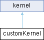

Class that represents a custom kernel. More...
#include <Kernels.h>
Inheritance diagram for customKernel:

Public Member Functions | |
| customKernel (kernel_t function) | |
| Constructor. | |
| float | operator() (float dist_ij, int point_id, int j) const override |
| Evaluate the custom kernel. | |
 Public Member Functions inherited from kernel Public Member Functions inherited from kernel | |
| kernel ()=default | |
| Constructor. | |
Detailed Description
Class that represents a custom kernel.
The user can pass a function object to the constructor
- Note
- The function object must have the following signature: wherefloat function(float dist_ij, int point_id, int j);


Constructor & Destructor Documentation
◆ customKernel()
|
inline |
Constructor.
- Parameters
-
function function object
- Note
- The function object must have the following signature: wherefloat function(float dist_ij, int point_id, int j);
Member Function Documentation
◆ operator()()
|
inlineoverridevirtual |
Evaluate the custom kernel.
- Parameters
-
dist_ij distance between the points i and j point_id id of the point i j id of the point j
- Returns
- the value of the custom kernel
Reimplemented from kernel.
The documentation for this class was generated from the following file:
- CLUEstering/include/Kernels.h